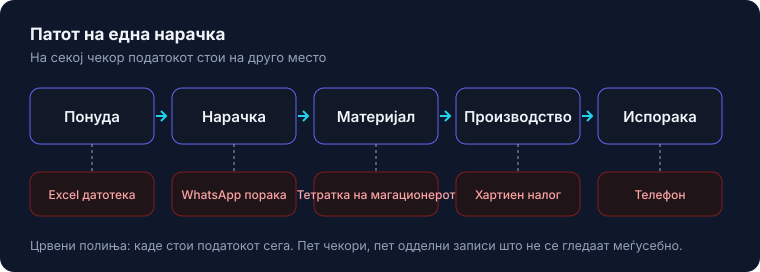
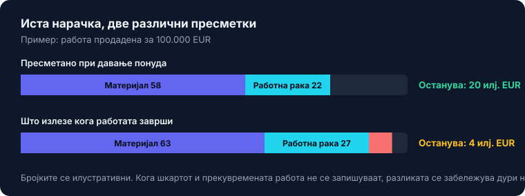

Кога станува потребен софтвер за управување со производство?
Повеќето производни фирми почнуваат со Excel, работни налози на хартија и WhatsApp група. Со пет-десет нарачки овој ред нема мана, секој знае што каде е. Кога нарачките ќе стигнат триесет-четириесет, истиот ред почнува секој ден да губи по малку пари, а таа загуба никој не ви ја собира и не ви ја става пред очи.

Познати сцени од погонот
Во производните погони што ги обиколуваме постојано ги гледаме истите сцени. Клиентот се јавува и прашува за нарачката, колегата од продажба вели „да видам и ќе ви се јавам“ и слегува во погонот. Шарките за вратите што треба да заминат во четврток се потрошиле во вторник, никој не забележал. Деловите што излегле погрешни на сечење се тргнати во еден агол, но никаде не е запишано колку се.
Планот обично го знае еден човек, најчесто раководителот на производство или најискусниот мајстор. Кога тој ќе замине на одмор една недела, работата оди, но побавно, затоа што нема кој друг да одлучи која работа има предност.
Тука е и прашањето за цената. Кога ќе прашате „колку заработуваме од оваа врата?“, одговорот кај повеќето фирми е лањската цена и поскапувањето додадено врз неа. Податоците потребни за да се пресмета вистинскиот трошок — колку часа работна рака отишле и колку материјал завршил во отпад — никогаш не се собрани.

Каде се плаќа сметката за ова?
Ниту еден од овие проблеми сам не ја доведува фирмата во тешкотија. Загубата се собира кога сите се случуваат заедно.
Задоцнета испорака
За нарачка што заминала доцна некогаш плаќате пенали, некогаш давате попуст. Поголемата загуба доаѓа потоа: клиентот следната работа ја дава на друга фирма што го држи ветениот рок, и тоа не ви го кажува.
Пари што лежат во магацинот
Кога не се знае од кој материјал кога и колку ќе треба, набавката се прави по чувство. На крај во магацинот лежи лим за шест месеци, а го нема шрафот потребен за утрешната работа. Линијата стои, а шрафот се купува од првата железарница во градот, без пазарење.
Шкарт што не се запишува
Ако делот што оди во отпад не се евидентира, не можете да знаете на која машина или во која смена е проблемот. На крајот на месецот гледате дека материјалот се намалил, а причината не можете да ја најдете.
Сè се прашува кај вас
Бидејќи податоците не стојат во систем, и најмалата одлука доаѓа кај газдата или директорот. Фирмата расте онолку колку што тие еден-двајца луѓе можат да соберат во еден ден.
За што тука служи софтверот?
Она што го нарекуваме софтвер за управување со производство е евиденција што ги собира горните податоци на едно место. Брендот и екранот се разликуваат, но работите што ги врши се приближно исти.
Кога нарачката ќе се потврди, системот ја претвора во работен налог. Во налогот пишува колку од кој материјал ќе се потроши, низ кои операции и по кој редослед ќе помине и кога се испорачува. Овој податок се внесува еднаш и потоа не се препишува на хартија или во порака.
Кога операторот ја почнува и ја завршува работата, прави запис на таблет или со баркод-читач. Колку парчиња излегле, колку биле со грешка, зошто застанала машината — сè влегува во системот во тој момент. Нема потреба навечер некој да собира обрасци и да ги препишува во Excel.
Бидејќи отворените работни налози се познати, и потребата од материјал излегува сама. Системот една недела однапред покажува дека шарките ќе се потрошат во вторник и набавката нарачува според тоа.
Кај планирањето, на еден екран се гледа која машина и кој тим на кој ден се зафатени. Кога ќе стигне нова нарачка, рокот на испорака го давате гледајќи во тој екран.
На крај, трошокот. Бидејќи потрошениот материјал, времето и шкартот се книжат на работниот налог, гледате колку ве чини секоја нарачка. Примерот подолу може да изгледа претеран, но кај фирмите каде што шкартот и прекувремената работа воопшто не се запишуваат излегуваат разлики од оваа големина.

„Нашата работа е поинаква, не ја собира во софтвер“
Ова го слушаме речиси на секој разговор и не е неоправдана забелешка. Кај фирма што произведува по нарачка секоја работа е различна. Кај сериското производство главната грижа е брзината. Во работилница што работи услужно (лон) материјалот е на клиентот и залихата се води сосема поинаку. Кога ќе земете готов пакет и ќе го поставите без ништо да допрете, поради овие разлики системот станува неупотреблив.
Затоа ние не почнуваме од софтверот. Прво утврдуваме како една нарачка се движи низ фирмата, а потоа го поставуваме системот според тој тек. Ако вработените мора да го менуваат начинот на работа затоа што така бара софтверот, нешто тргнало наопаку при воведувањето.
Кога Excel престанува да биде доволен?
На работилница со тројца луѓе не ѝ треба софтвер за производство од првиот ден. Колку што сме виделе, Excel не може да ја носи работата кога ќе почне некоја од овие ситуации:
- Ако бројот на работи што течат истовремено го надминува она што еден човек може да го држи во глава.
- Ако производот минува низ неколку фази и чека меѓу нив.
- Ако не знаете колку нарачки минатиот месец заминале доцна.
- Ако работата застанува неколку пати месечно поради недостиг на материјал.
- Ако се размислува за втора смена, втор погон или нова група производи.
Кој софтвер?
Избор има многу: ERP системи со широк опфат, MES решенија што гледаат само на производниот погон, пакети за одредена дејност и апликации пишувани по мерка за фирмата. Кое е соодветно зависи од големината на фирмата и од тоа што произведува.
Ние не се обидуваме да продадеме одреден производ. Кај некои фирми воведовме прилагоден ERP, кај други напишавме едноставна апликација само за погонот. Нашето искуство вели: скап систем што не ѝ одговара на фирмата е помалку корисен од евтин, но добро поставен систем.
Од каде се почнува?
Како прва работа, следете една нарачка од почеток до крај. Каде е напишана понудата, како нарачката е пренесена во погонот, како е побаран материјалот, како е јавено за испораката? Забележете го секое место каде што податокот преминува на хартија, во порака или во нечија глава. Кај повеќето фирми овој список исполнува цела страница.
Потоа од списокот изберете една ставка што најмногу ве боли. Обично тоа е или следењето на работни налози или потребата од материјал. Проектите што се обидуваат сè да поправат одеднаш остануваат на половина пат.
Избраната тема прво испробајте ја на една линија или една група производи. Кога тимот ќе почне да му верува на системот, по ред ги додавате планирањето, трошоците и квалитетот.
Често поставувани прашања
Дали е потребен и за мала работилница?
И во работилница со пет луѓе се исплати да се среди следењето на нарачките и материјалот. За оваа големина не треба голем систем; доволен е едноставен ред поставен според работата.
Дали мајсторите и операторите ќе го користат?
Ќе го користат ако екранот е едноставен. Од операторот најчесто се бараат два допира: почни ја работата, заврши ја работата. Кај системите што не се користат обично на човекот во погонот му е додадена работа, а за возврат не му е дадено ништо што му ја олеснува.
Колку трае воведувањето?
Зависи од опфатот. Само следењето на работни налози се пушта во работа за неколку недели. Систем што опфаќа и планирање, трошоци и квалитет трае неколку месеци. Ние претпочитаме да одиме фаза по фаза, за првата корист да се види рано.
Дали работи заедно со нашата сметководствена програма?
Во повеќето случаи, да. Системот за производство може да се постави така што ќе пренесува податоци во сметководствената програма што ја користите. Не мора да ја менувате.
Поврзани услуги: ERP и следење на производство за производни фирми, ERP решенија за мали и средни фирми, студија на случај: следење на производство на префабрикувани елементи.
Колкав дел од капацитетот користат вашите машини?
Од планираното време, застоите и произведените парчиња пресметајте го OEE и од каде доаѓа најголемата загуба.
Отвори го калкулаторотШаблон за план на производство и капацитет
Дневен капацитет по машина, ден на завршување на нарачките и работи што ќе го пропуштат рокот. Бесплатен Excel шаблон.
Погледни ги шаблонитеДа го погледнеме заедно вашето производство
Да го исцртаме заедно патот на една ваша нарачка и да видиме каде запнува.
Да разговараме за вашиот проект